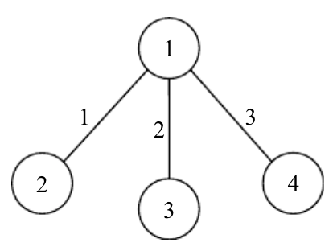

X 国遭受了地震的重创，导致全国的交通近乎瘫痪，重建家园的计划迫在眉睫。X 国由 $N$ 个城市组成，重建小组提出，仅需建立 $N-1$ 条道路即可使得任意两个城市互相可达。于是，重建小组很快提出了一个包含 $N-1$ 条道路的方案，并满足城市之间两两可达，他们还计算评估了每条道路 $e$ 建设之后可以带来的价值 $v(e)$。
由于重建计划复杂而艰难，经费也有一定的限制。因此，政府要求第一期重建工程修建的道路数目为 $k$ 条，但需满足 $L \le k \le U$，即不应少于 $L$ 条，但不超过 $U$ 条。同时，为了最大化利用率，要求建设的这些道路恰好组成一条简单路径，即所建设的 $k$ 条路径可以构成一个排列 $e_1=(p_1,q_1),e_2=(p_2,q_2),...,e_k=(p_k,q_k)$，对于 $1 \le i < k$，有 $(q_i=p_{i+1})$。
重建小组打算修改他们的原有方案以满足要求，即在原有的 $N-1$ 条道路中寻找一条路径 $S$ 作为新的方案，使得新方案中的道路平均价值 $AvaValue=\frac{\sum_{e \in S}v(e)}{|S|}$ 最大。这里 $v(e)$ 表示道路 $e$ 的价值，$|S|$表示新方案中道路的条数。请你帮助重建小组寻找一个最优的方案。
注：在本题中 $L$ 和 $U$ 的设置将保证有解。
第一行包含一个正整数 $N$，表示 $X$ 国的城市个数。
第二行包含两个正整数 $L$、$U$，表示政府要求的第一期重建方案中修建道路数的上下限。
接下来的 $N-1$ 行描述重建小组的原有方案，每行三个正整数 $a_i,b_i,v_i$，分别表示道路 $(a_i,b_i)$ ，其价值为 $v_i$。其中城市由 $1...N$ 标号。
仅包含一行，为一个实数 $AvgValue$，即最大平均价值。小数点后保留三位。
4 2 3 1 2 1 1 3 2 1 4 3
2.500
【样例说明】
输入的原方案如下图所示，新方案中选择路径 $(3,1),(1,4)$ 可以得到的平均价值为 2.5，为最大平均价值。

【数据规模】
对于20%的数据，$N \le 5000$；
另有30%的数据，$N \le 100 000$，原有方案恰好为一条路径（链）；
对于100%的数据，$N \le 100 000，1 \le L \le U \le N-1, v_i \le 10^6$。
 Comet OJ
Comet OJ